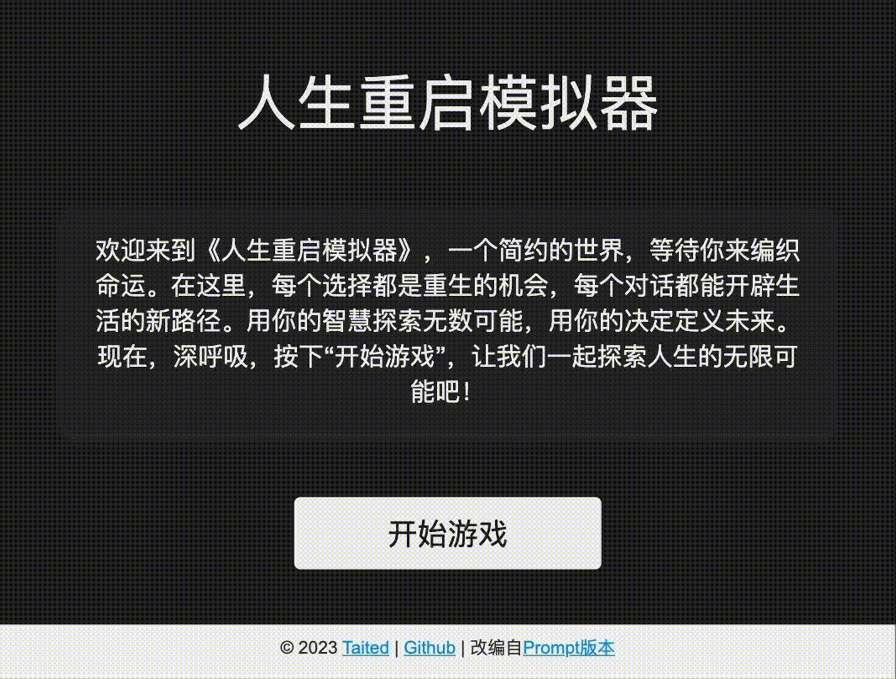
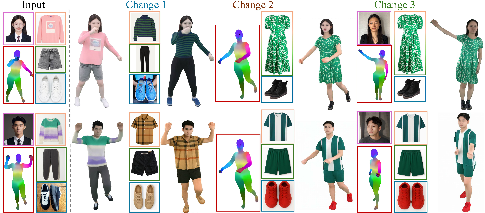
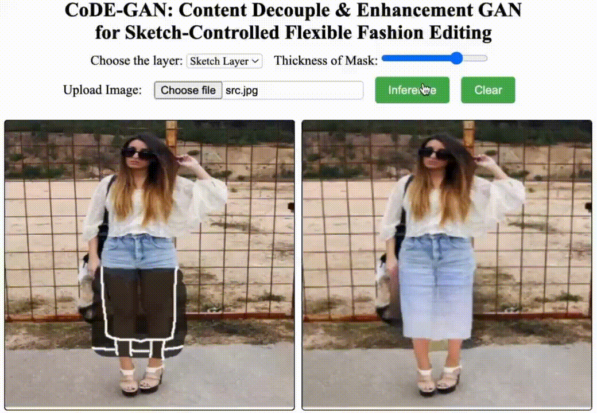
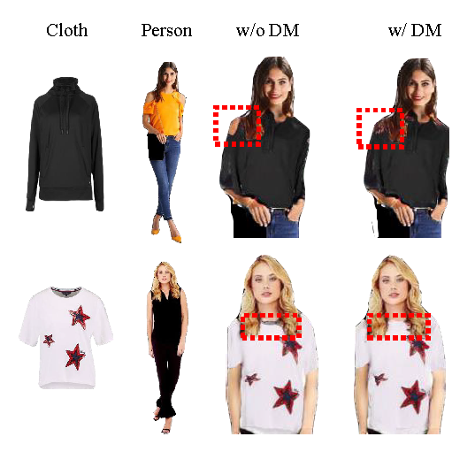
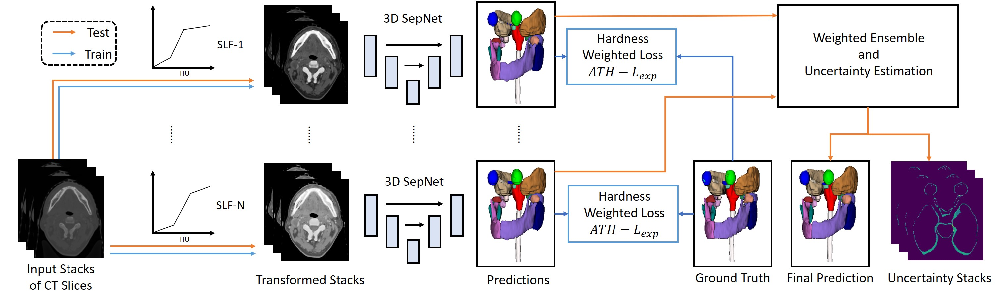
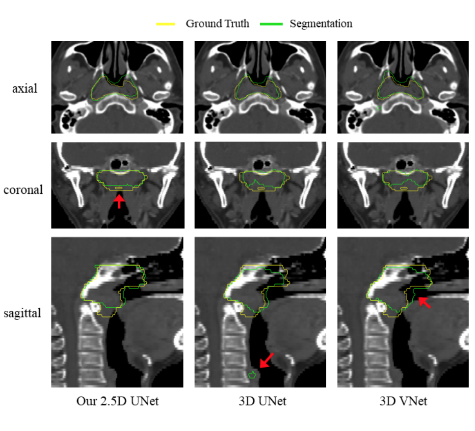

Zhengwentai SUN
I am Zhengwentai SUN (孙正文泰), a Ph.D. student at The Chinese University of Hong Kong, Shenzhen, supervised by Prof. Xiaoguang Han. I completed my MPhil degree at The Hong Kong Polytechnic University, where I was supervised by Prof. Tracy Mok. I obtained my Bachelor's degree from the University of Electronic Science and Technology of China. My research focuses on generative models such as GANs and Diffusion models, particularly their applications in human-centric tasks. Additionally, I am exploring Large Language Models (LLMs) and their interaction with human users and generative vision models.
Open Source Projects
|  |
Life-Reload Simulator is an innovative life simulation game powered by GPT-3.5-turbo. It offers a unique experience with its dynamic content generation and immersive gameplay.

|
Publications
|  |
Sun, Z., Li, C., Liao, H., ..., Han, X. (2025). Exploring Disentangled and Controllable Human Image Synthesis: From End-to-End to Stage-by-Stage.
|
|
|
He, H., Sun, Z., Fan, J., & Mok, P. Y. (2025). TiPGAN: High-quality tileable textures synthesis with intrinsic priors for cloth digitization applications. Computer-Aided Design.
|
|  |
Sun, Z., Zhou, Y., & Mok, P. Y. (2025). CoDE-GAN: Content Decoupled and Enhanced GAN for Sketch-guided Flexible Fashion Editing. ToMM.
|
|  |
Pan, S., Sun, Z., Wang, C., Zhang, J. (2024). A 3D Virtual Try-on Method with
Global-Local Alignment and Diffusion Model. IEEE ICASSP 2024.
|

|
Sun, Z., Zhou, Y., He, H., & Mok, P. Y. (2023). SGDiff: A Style-Guided Diffusion Model for Fashion Synthesis. ACM Multimedia 2023.
|
|  |
Lei, W., Mei, H., Sun, Z., Ye, S., Gu, R., Wang, H., ... & Wang, G. (2021). Automatic segmentation of organs-at-risk from head-and-neck CT using separable convolutional neural network with hard-region-weighted loss. Neurocomputing, 442, 184-199.
|
|  |
Mei, H., Lei, W., Gu, R., Ye, S., Sun, Z., Zhang, S., & Wang, G. (2021). Automatic segmentation of gross target volume of nasopharynx cancer using ensemble of multiscale deep neural networks with spatial attention. Neurocomputing, 438, 211-222.
|
Service
- Reviewer for ACM MM 2024 & 2025, Neurocomputing, IEEE TCSVT, ACM Computing Surveys, and Computers & Graphics.
Experiences
- Teaching Assistant for CSC1006 - Artificial Intelligence for Science and Engineering 2025
- Teaching Assistant for ITC446XE - Mobile App Design for Fashion 2023
- Intern at Tencent LightSpeed Studio (光子工作室) 2021